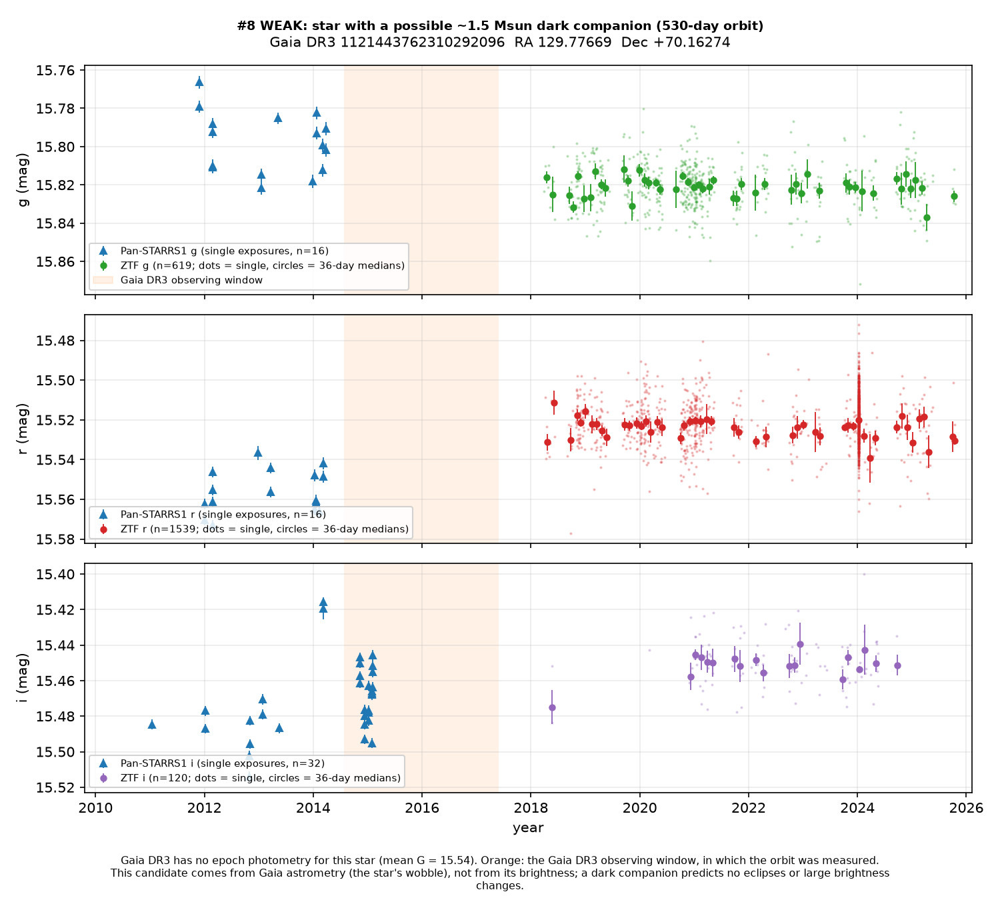
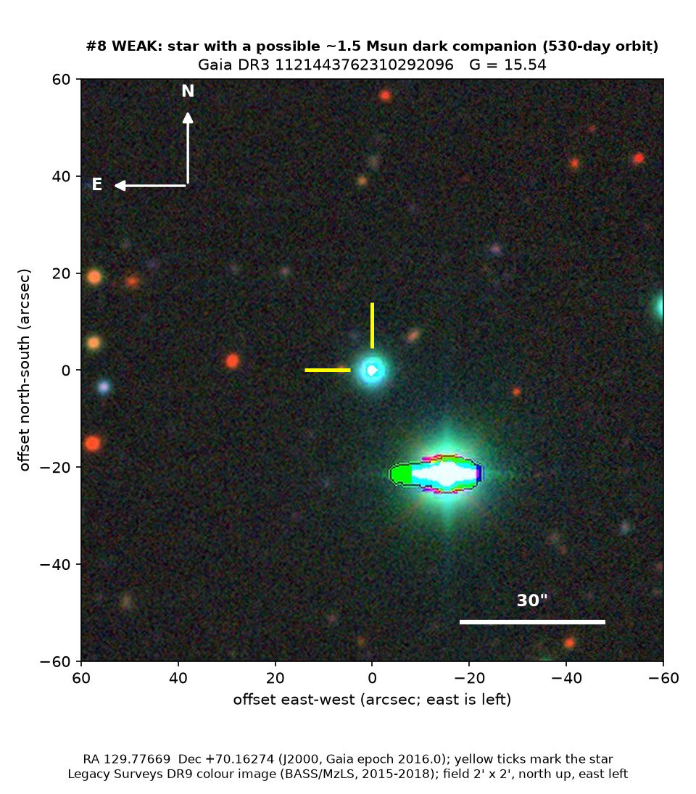

Professor of Mathematics
Paata Ivanisvili
Department of Mathematics, University of California, Irvine

Candidate 8: a wobble that hints at a dark companion
How to read the pictures. The finder chart is a patch of sky two arcminutes across, about a fifteenth of the Moon’s width, with north up and east to the left. The star sits between the two yellow ticks, and the white bar is 30 arcseconds. On a light curve the vertical axis is magnitude. A larger magnitude means a fainter star, so the axis runs downwards: down means fainter. Orange shading marks the change. Surveys use slightly different filters, so each one is compared with its own normal level.

What the search found. A Sun-like star in Ursa Major. Gaia found that it moves in a small ellipse on the sky every 530 days, as if a companion were pulling it around. For a star of about 0.8 solar masses, the companion would have 1.35 to 1.72 solar masses and still give off no light Gaia can see. That could be a neutron star, a heavy white dwarf, or a pair of white dwarfs. The steady light curve is what a dark companion would do: the brightness does not have to change for the wobble to be real.
Why the rating is weak. The orbit fails one of Gaia’s recommended quality cuts. The parallax signal-to-noise is 23.7, and the cut requires 37.7. A mass near 1.5 times the Sun cannot tell a neutron star from a heavy white dwarf. There are no measurements of the speed along the line of sight to confirm the orbit.
- Star
- Gaia DR3 1121443762310292096, a Sun-like star
- Location
- RA 129.77669°, Dec +70.16274° (J2000), in Ursa Major
- Distance
- about 1,500 parsecs (5,000 light-years)
- Brightness
- Gaia G = 15.5
- Rating
- The line under the title is the search’s own rating: self-vetted, not reviewed by an outside expert, and nothing has been reported or submitted. See the note on the index.
- Caveat
- The orbit does not pass Gaia’s quality cut on the parallax, the mass does not say what the companion is, and nothing confirms the orbit along the line of sight.
